Bailey Sherwood Portfolio
Space Science
Part 1 Photos.
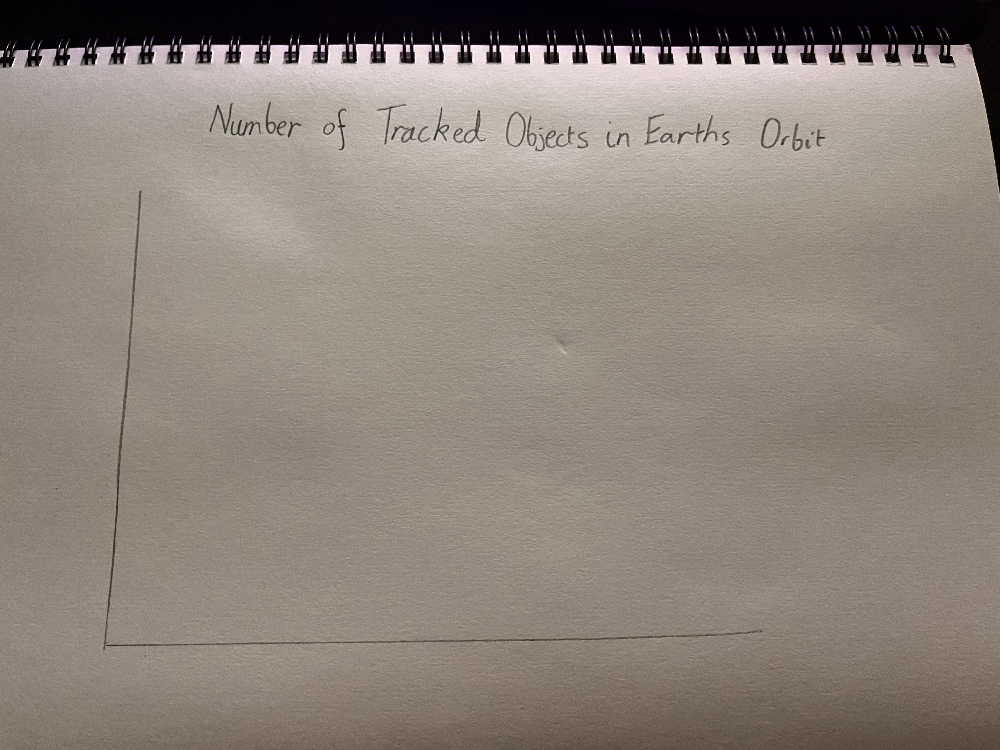
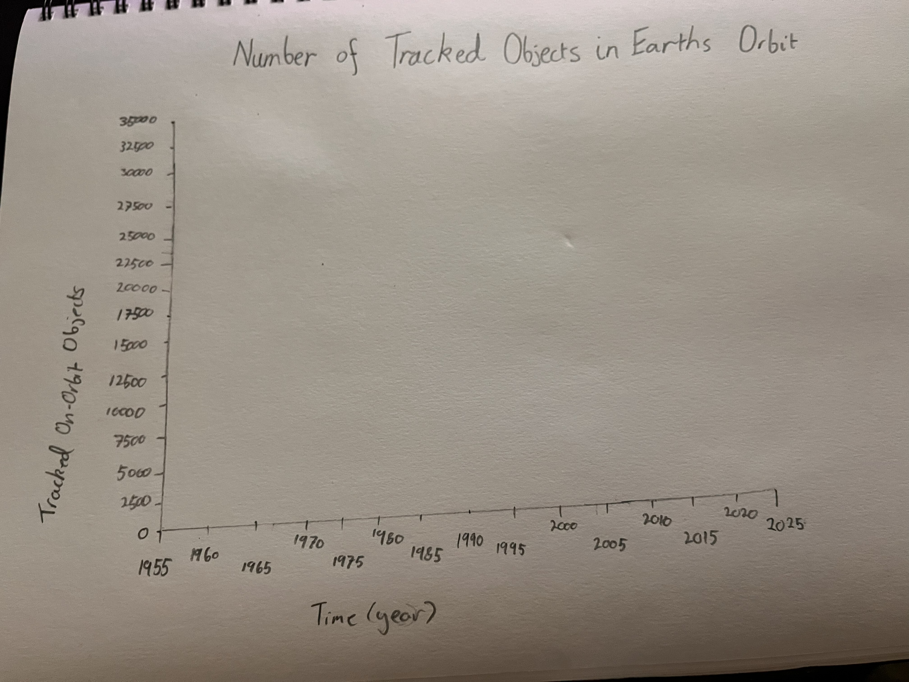
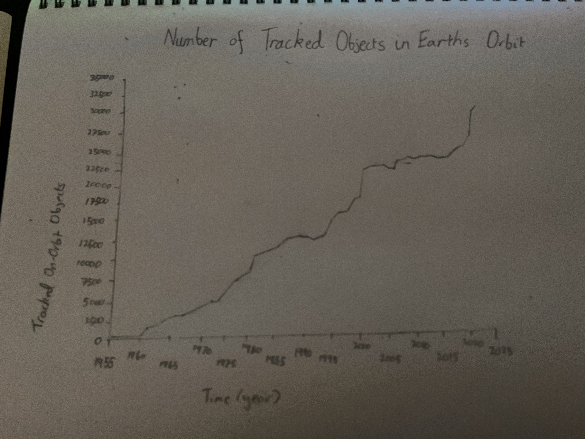
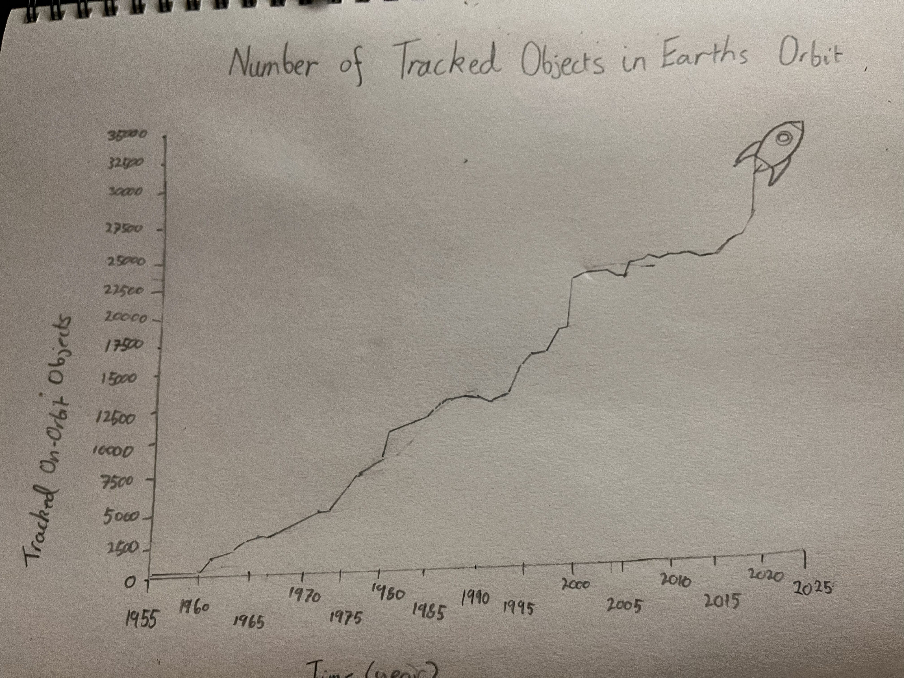
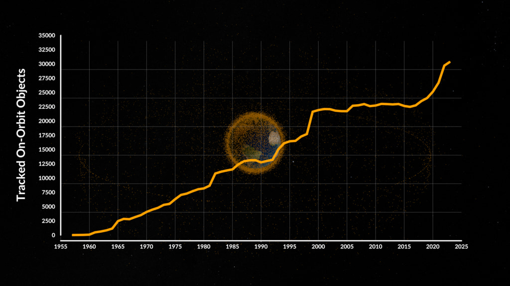
Gestalt
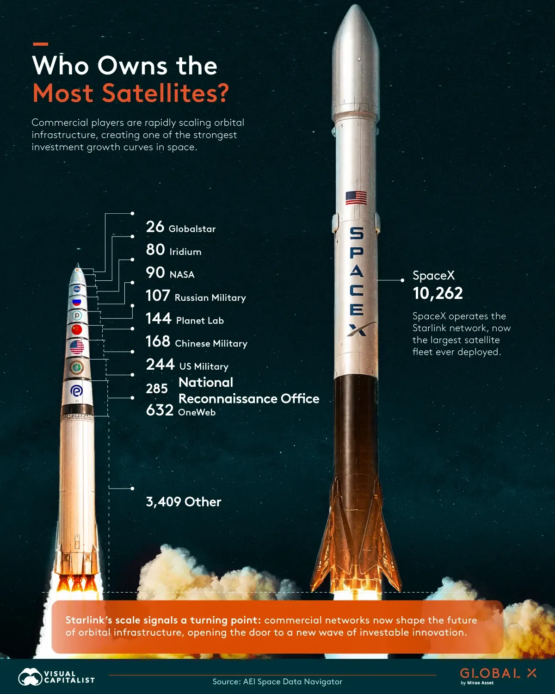
Objective:
The objective of the image is to show that SpaceX
overwhelmingly owns more operational satellites than
any other organisation.
Preattentive Processing:
The first thing that grabbed my attention was the
size of the SpaceX rocket, showing that SpaceX has
launched substantially more satellites than any
other organisation.
Gestalt Law:
The infographic uses the Gestalt Law of Proximity by
placing all non-SpaceX satellite owners close
together beside one rocket. This causes viewers to
perceive them as a single comparison group, while
SpaceX is isolated to emphasise its significantly
larger satellite fleet.
Visual Comparison Accuracy:
The image mainly uses length to compare satellite
ownership, with the height of the rocket
representing the number of satellites.
Reference:
Visual Capitalist. (2026).
Ranked: Who owns the most satellites?
Voronoi.
View the original infographic
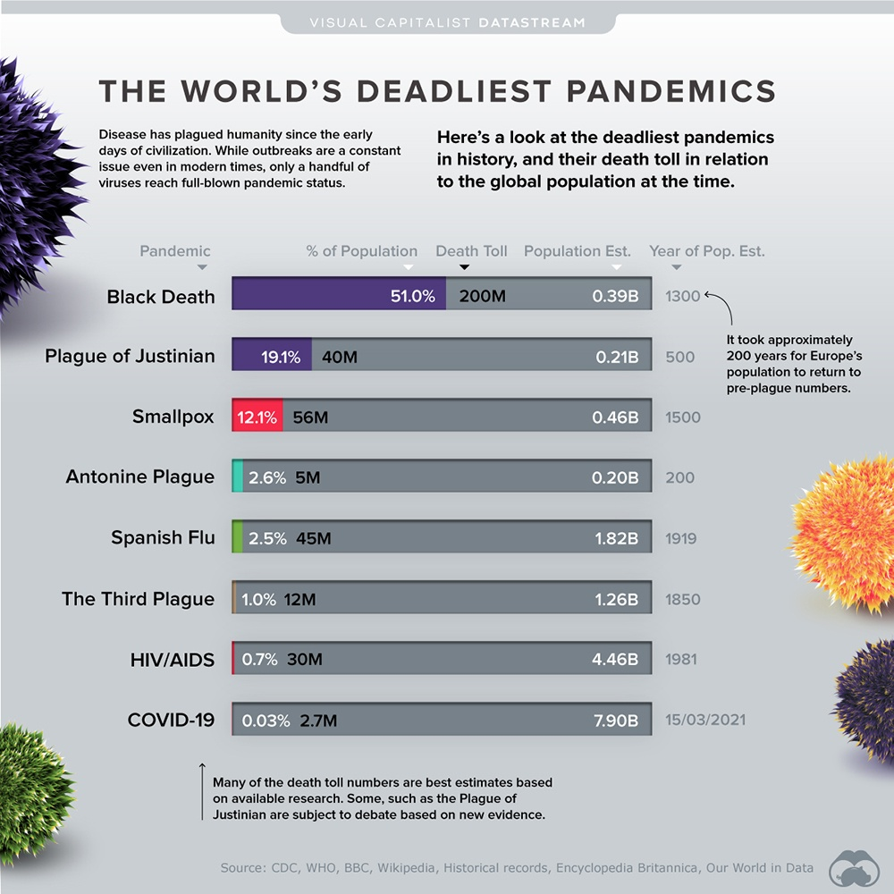
The objective of this task was to gather source information and check the validity of data presented online against factual statistics in order to determine how robust the dataset was. The chart compares the deadliest pandemics by the percentage of the global population they killed, showing that the Black Death had the greatest proportional effect on the population. The question, data and visuals work together, but the term “deadliest” may be misleading because the pandemics are ranked by population percentage rather than total deaths. The graphic’s colours may also reduce clarity because they do not present a clear visual trend.
Reference:
Ang, C. (2020).
5 visualizations we wish we had published in
March 2020.
HowMuch.net.
View the source

Introduction to Python

Introduction to Data Visualisation
Discussion:
Above are the certificates of completion for two
DataCamp courses: Introduction to Python and
Introduction to Data Visualisation. After
completing them, I feel that I have gained a
well-rounded foundation and am more confident
working with datasets and creating
visualisations.
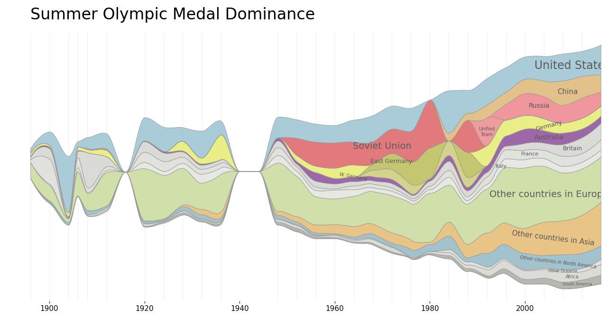
Original visualisation
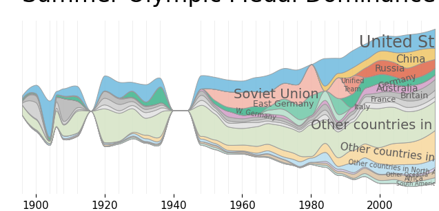
Modified colour-blind-friendly visualisation
The aim of this exercise was to recreate a visualisation showing the history of the Summer Olympics. I collected Olympic data and used Python to organise the medal results by country and Olympic year. Using Matplotlib, I visualised the data and added colour. After recreating the original image, I recoloured it using a palette designed to remain distinguishable for people with colour-vision deficiencies.
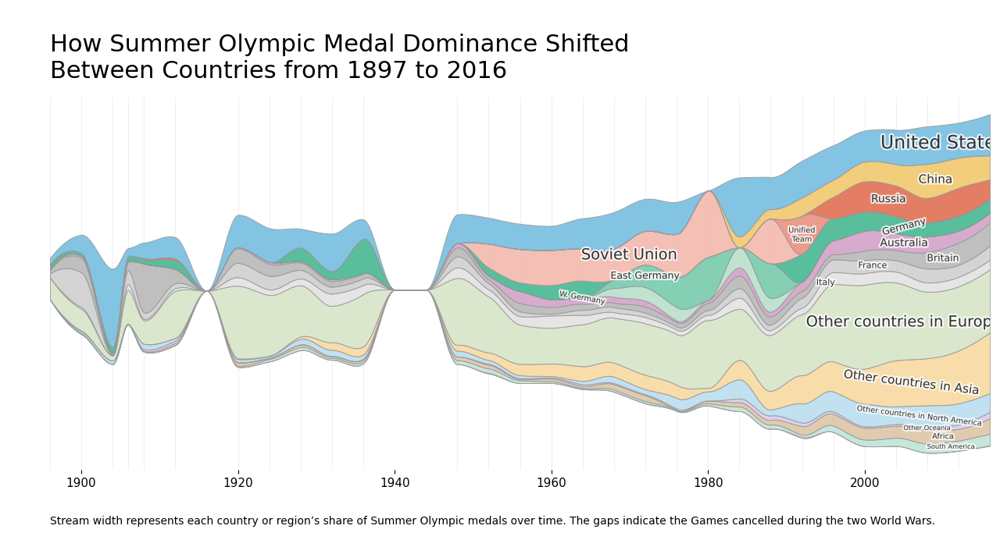
Description:
In order to better the graph, added a more descriptive title with 8-20 words for more description (in top left). In addition, a subtitle will be added below the graph to add additional information about what the graph displays. To better display the names on the countries, I will attempt to fix the labels on the graph to better show which areas correspond to each country
Aisch, G., & Buchanan, L. (2016, August 22). The New York Times. https://www.nytimes.com/interactive/2016/08/08/sports/olympics/history-olympic-dominance-charts.html OlyMADMen. (n.d.). PASTE_MODULE_6_URL_HERE
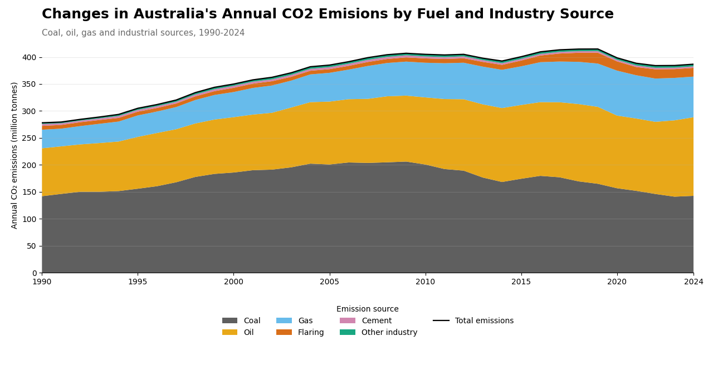
Description:
The original data contained Australia's total annual co2 emissions. For the multivariate addition I added the sources of where the co2 emissions are coming from in each case. This allows for both the total emission and the emissions from each component to be viewed simultaneously as well as being a good visualisation to were
| Title | Australia’s Annual CO₂ Emissions by Source Over Time |
|---|---|
| Summary | This multivariate visualisation shows Australia’s total annual CO₂ emissions and the amount produced by coal, oil, gas, cement, flaring and other industry. This allows the total emissions and their individual sources to be viewed together. |
| Data Sources |
Original dataset:
Processed database: |
| Variables Used | Country, year, total CO₂ emissions, coal CO₂, oil CO₂, gas CO₂, cement CO₂, flaring CO₂ and other industry CO₂. |
| Mapping |
|
| Important Notes |
|
| Access | The original data can be accessed through Zenodo. The processed CSV file and its codebook can be accessed through the Our World in Data GitHub repository. |
Andrew, R. M., & Peters, G. P. (2025). The Global Carbon Project’s fossil CO₂ emissions dataset (Version 2025v15) PASTE_MODULE_7_URL_HERE
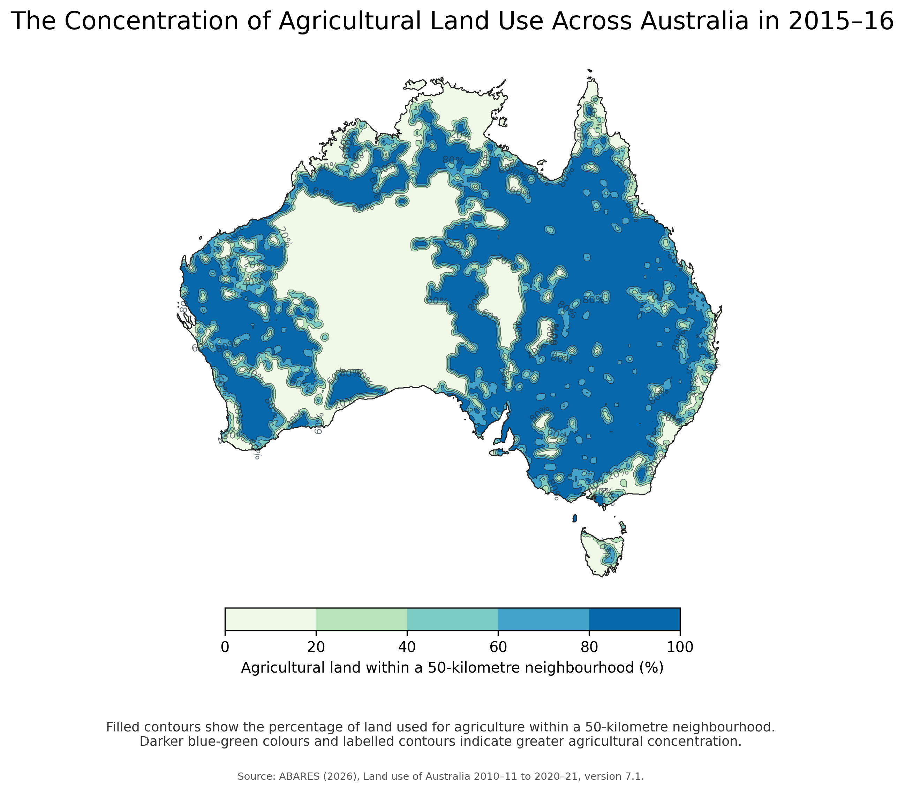
Description:
The aim of this module was to recreate and simplify the Australian land-use map. I first located the original data from ABARES and used Python to organise the agricultural land-use information. I then created an isarithmic-style map to show where agricultural land was most concentrated across Australia during 2015–16. After creating the first version, I changed the colours to a softer, colour-blind-friendly palette so the map would be easier and more comfortable to view. Overall, the final visualisation presents the original information in a clearer and simpler way.
| Title | Agricultural Land Use Concentration Across Australia in 2015–16 |
|---|---|
| Summary | This isarithmic-style map shows the concentration of agricultural land use across Australia during 2015–16. The original land-use data was simplified and smoothed to show broader regional patterns. |
| Data Source | Australian Bureau of Agricultural and Resource Economics and Sciences. (2022). Land use of Australia 2010–11 to 2015–16, 250 m [Data set]. Department of Agriculture, Fisheries and Forestry. View the original dataset |
| Variables Used | Geographic location and agricultural land-use classification. |
| Mapping |
|
| Important Notes |
|
| Access | The original land-use dataset can be downloaded from the Australian Government dataset record using the link above. |
Author or Organisation. (Year). Title of the image or visualisation [Data visualisation]. Website Name. PASTE_MODULE_8_URL_HERE
Comments
Figures:
The data above displays the growing number of tracked objects in Earth orbit over time.
Personal Reflection:
I find the data quite interesting as a space science student. I would have thought there would be a much stronger upward trend as technology evolved, but the increase appears relatively linear.
Reference:
Elkins, K. (2025, June 16). Tracking satellites and space debris in Earth orbit (February 2024). NASA Scientific Visualization Studio.
View the original visualisation